dm701
Table of Contents
- Github repositories
- Machine learning and deep learning
- General
- Little learner
Github repositories
Machine learning and deep learning
General
TODO Automatic differentiation
TODO Complex numbers
Elementwise operations
In elementwise operations like addition, subtraction, and division, values that correspond positionally are combined to produce a new tensor. The first value in tensor A is paired with the first value in tensor B. The second value is paired with the second, and so on. This means the tensors must have equal dimensions (i.e. equal shapes) in order to complete the operation (source: ml-cheatsheets).
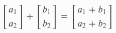
Figure 1: Elementwise operation
Hadamard product
The Hadamard product (also known as element wise product) is an operation which takes in two matrices of the same shape and returns a matrix of the multiplied corresponding elements (source: wikipedia).
TODO Imaginary numbers
Non-linear functions
Often a linear function cannot explain the relationship between variables, in such cases a non-linear function must be used.
Non-linear means the graph is not a straight line, therefore the graph of a non-linear function is a curved line.
The slope of a linear function is the same no matter where on the line it is measured, by contrast the slope of a non-linear function is different at each point on the line. Thus there is no single slope for a non-linear function. However the slope can be determined at any point on the line. The techniques of differential calculus are used to determine the slopes of non-linear functions.
Examples of non-linear functions are:
- Exponential functions
- Quadratic functions
- Logarithmic functions
(source: columbia.edu)
Outliers
An outlier is a data point significantly different from other data points in a dataset. Outliers can occur for various reasons, such as measurement errors, data entry errors, or natural variations in the data. They can significantly impact analysis in machine learning.
An example of this is if we were to take the following dataset:
[15 101 18 7 13 16 11 21 5 15 10 9]
just by looking at it, one can quickly say ‘101’ is an outlier because it is much larger than the other values (source: almabetter and analyticsvidhya).
Quadratic equations
Here's an example of a standard quadratic equation:
\[5x^2+3x+3=0\]
The name quadratic comes from quad meaning square, because the variable gets squared (\(x^2\)).
The standard form of a quadratic equation looks like this:
\[ax^2+bx+c=0\]
- \(a\), \(b\) and \(c\) are known values. \(a\) can't be 0.
- \(x\) is the variable (the value which don't know yet).
Examples:
| \(2x^2+5x+3=0\) | In this one \(a=2\), \(b=5\) and \(c=3\). |
| \(x^2-3=0\) | \(a=1\), \(1x^2\) is not normally written. $b=-3, and \(c=0\) so it is not shown. |
| \(5x-3=0\) | This is not quadratic as it is missing \(x^2\). |
(source: mathsisfun)
To better understand why \(5x-3=0\) is not quadratic, one should keep in mind that the equation must fit the form \(ax^2+bx+c=0\). For the given equation to be written in that form, it would look like:
\[0x^2+5x-3=0\]
where:
- \(a=0\)
- \(b=-5\)
- \(c=-3\)
Since \(a=0\), the equation does not meet the criteria for being quadratic. A quadratic equation requires that \(a\) (the coefficient of \(x^2\)) must be non-zero. Therefore, this equation is a linear equation, which can be written as:
\[ax+b=0\]
Hidden quadratic equations
Sometimes a quadratic equation does not look like \(5x^2+3x+3=0\), for example:
| Initial form | Converting to standard form | In standard form | a, b and c |
|---|---|---|---|
| \(x^2=3x-1\) | Move all terms to left hand side | \(x^2-3x+1=0\) | \(a=1\), \(b=3\) and \(c=1\) |
| \(2(w^2-2w)=5\) | Expand (undo the brackets) and move 5 to the left | \(2w^2-4w-5=0\) | \(a=2\), \(b=4\) and \(c=5\) |
| \(z(z-1)=3\) | Expand, and move 3 to left | \(z^2-z-3=0\) | \(a=1\), \(b=-1\) and \(c=3\) |
(source: mathsisfun)
Solving quadratic equations
The solutions to a quadratic equation is where the value of \(x\) that make the equation equal to zero. These solution are also called roots or sometimes zeroes.
There are usually two solutions to a quadratic equation, as per this graph
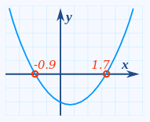
Figure 2: Quadratic graph
and they can be solved using the following quadratic formula:
\[x = \frac{-b \pm \sqrt{b^2 - 4ac}}{2a}\]
Here the \(\pm\) sign means that there two answers:
\[x = \frac{-b + \sqrt{b^2 - 4ac}}{2a}\]
and
\[x = \frac{-b - \sqrt{b^2 - 4ac}}{2a}\]
The term under the square root, \(b^2-4ac\) is called the /discriminant/, because it can discriminate between the possible types of solutions:
- If \(b^2-4ac>0\), there are two distinct real solutions.
- If \(b^2-4ac=0\), there is one real solution (a repeated root).
- If \(b^2-4ac<0\), there are no real solutions, but two complex solutions.
Using the quadratic formula
- Coefficients are: \[a=5 b=6 c=1\]
- Quadratic formula: \[x = \frac{-b \pm \sqrt{b^2 - 4ac}}{2a}\]
- Put in a, b and c: \[x = \frac{-6 \pm \sqrt{6^2 - 451}}{25}\]
- Solve: \[x = \frac{-6 \pm \sqrt{36 - 20}}{10}\] \[x = \frac{-6 \pm \sqrt{16}}{10}\] \[x = \frac{-6 \pm 4}{10}\] \[x = -0.2 \text{ or } -1\]
The solutions can be visualised on this graph
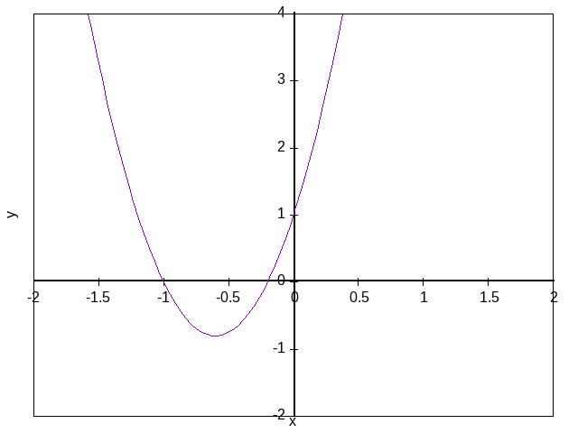
Figure 3: Quadratic graph real solutions
We can check the answers:
Check -0.2
\[5*(-0.2)^2+6*(-0.2)+1=5*(0.04)+6*(0.2)+1=0.2-1.2+1=0\]
Check -1
\[5*(-1)^2+6*(-1)+1=5*(1)+6*(-1)+1=5-6+1=0\]
If the solution was a repeated root, the parabola on the graph would only touch the \(x\) axis at one point
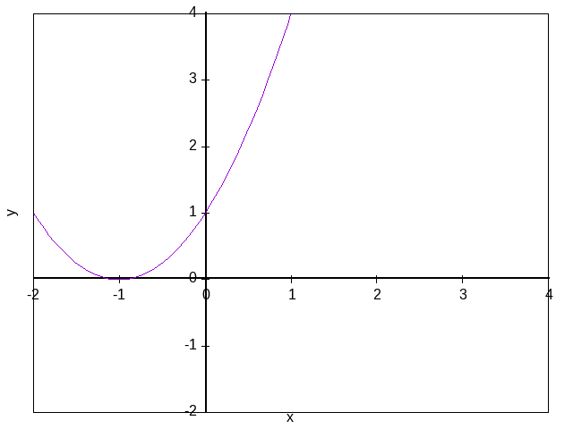
Figure 4: Quadratic graph repeated root
(source: mathsisfun)
Complex solutions
When the discriminant is negative we get a pair of complex solutions, meaning that the results will include imaginary numbers. For example, if we wanted to solve \[5x^2+2x+1=0\]
with coefficients \(a=5\), \(b=2\) and \(c=1\)
in this case the discriminant is negative \[b^2-4ac=2^2-4*5*1=-16\]
Using the quadratic formula \[x = \frac{-2 \pm \sqrt{-16}}{10}\] \[\sqrt{(-16)} = 4i\]
therefore \[x = \frac{-2 \pm 4i}{10} = -0.2 \pm 0.4i\]
Viewing on a graph, the curve does not cross the \(x\) axis, which is why we end up with a complex number
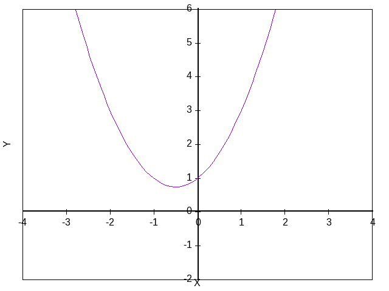
Figure 5: Quadratic graph complex solution
(source: mathsisfun)
Tensor broadcasting
According to numpy, tensor operations are usually done on pairs of tensors on an element-by-element basis. In the simplest case, the two tensors must have the exact same shape. For example:
(* [1.0 2.0 3.0] [2.0 2.0 2.0])
will return:
[2.0 4.0 6.0]
Broadcasting rules can relax these constraints when the tensors' shapes meet certain constraints. The simplest broadcasting example occurs when a tensor and a scalar are combined in an operation:
(* [1.0 2.0 3.0] 2.0)
returns:
[2.0 4.0 6.0]
We can think of the scalar being stretched during the arithmetic operation, into a tensor the same shape as the first one. The new elements in the stretched tensor are just copies of the original scalar.

Figure 6: In the simplest example of broadcasting, the scalar b is stretched to become an array of same shape as a so the shapes are compatible for element-by-element multiplication (source: numpy).
Little learner
This section is a series of notes about machine learning and deep learning in the context of the book "The Little Learner: A straight line to deep learning" by Daniel P. Friedman and Anurag Mintaka.
Basic machine learning
Here's a plane graph plot of a line against the \(x\) axis (horizontal) and the \(y\) axis (vertical).
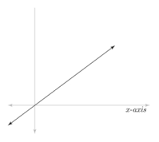
Figure 7: Plane graph plot
\(x\) is related with \(y\) for every point \((x, y)\) on the line by an equation.
Using arrows at both ends of the line means that it extends indefinitely in both directions. It follows that that there is a corresponding \(y\) for every \(x\).
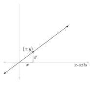
Figure 8: Plane graph plot
The point at which the \(x\) axis and the \(y\) axis meet is called the origin, the point (0, 0). The line in this particular graph passes through it.
Because this line passes through the origin, \(y\) is a multiple of \(x\) by a constant factor \(w\) (weight). \(w\) is called the slope of the line and the aforementioned equation is \(y=wx\)
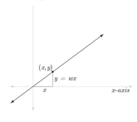
Figure 9: Plane graph plot
In case the line does not go through the origin, this is what it looks like
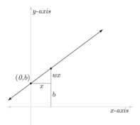
Figure 10: Plane graph plot
Now the whole line is lifted by \(b\) (sometimes called the bias), and \(y\) for any \(x\) can be determined with the equation \(y=wx+b\).
Here's an initial attempt at a line function, it is a function of one argument which results in a function of two arguments:
(define line (lambda (x) (lambda (w b) (+ (* w x) b))))
Although this definition of line might seem not to accept the arguments of \(w\), \(b\) and \(x\) be in the correct order, one ought to understand that the kind of problem we are dealing with is where the values of \(x\) are known, and \(w\) and \(b\) must be figured out from number of given values of \(x\) and \(y\).
If we had \(w\) and \(b\) before \(x\), this would assume that they are known prior to the argument \(x\).
Now \(w\) and \(b\) are used to determine the \(y\) corresponding to a given \(x\), they are considered a special kind of argument. They are referred to as parameters of line, whereas \(x\) is the argument of line.
Here's an example of how to use line:
(line 8)
where (line 8) is itself function which remembers that \(x\) is 8, and is waiting to accept arguments (i.e. parameters) for its arguments \(w\) and \(b\), like this:
(lambda (w b) (+ (* w 8) b))
So when (line 8) is invoked on \(w\) and \(b\), we can determine \(y\).
If we were to invoke:
((line 8) 4 6)
those would be the steps:
((lambda (w b) (+ (* w 8) b)) 4 6) (+ (* 4 8) 6) (+ 32 6) => 38
meaning that when \(x\) is 8, y is 38.
Functions that accept parameters after the arguments are known as parameterized functions, line is a parameterized function because it takes \(w\) and \(b\) after the argument \(x\).
Such functions are used where the correct values for the parameters (here \(w\) and \(b\)) must be figured from given values of \(x\) and the corresponding values of \(y\).
Here is an example, using the following dataset:
(define line-xs [2.0 1.0 4.0 3.0]) (define line-ys [1.8 1.2 4.2 3.3])
for each \(x\) coordinate in line-xs, there is a corresponding \(y\) coordinate in line-ys.
That's how the dataset (line-xs, line-ys) looks as points on a graph:
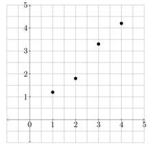
Figure 11: Dataset plotted on plane graph
Going back to our line function, remember that it has two parameters, \(w\) and \(b\). If we were to draw a line close the four points, like this:
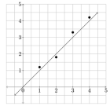
Figure 12: Dataset with line plotted
we would say that this function is a simple line with parameters \(w\) = 1.0 and \(b\) = 0.0, since the line passes trough the origin, \(b\) is 0.0.
The \(x\) and \(y\) coordinates on this line are always equal. For instance, (0.0 0.0), (1.0 1.0), and so on. This is why \(w\) is 1.0.
Therefore, if we are given a new \(x\) coordinate, it's possible to predict the corresponding \(y\) coordinate from this line function. For instance if \(x = 3.79\), then \[y=1.0*3.79+0=3.79\]
This would be referred to as the predicted \(y\) for a given \(x\). Finding the parameters of a function from a dataset is called learning.
The parameters \(w\) and \(b\) are collectively known as the parameter set, which is referenced to as θ (little-theta). θ in this case has two parameters, the first which is \(w\), is referred to as \(\theta_0\), and \(b\) is \(\theta_1\).
Our /line function can then be rewritten like this:
(define line (lambda (x) (lambda (little-theta) (+ (* (ref little-theta 0) x) (ref little-theta 1)))))
So the dataset was examined on a graph, and from that it was possible to estimate a \(\theta\). This was used to predict a \(y\) coordinate for an \(x\) coordinate which might not be part of the initial dataset.
One final thing to note is that line is what's commonly called a linear function because it only uses addition and scaling to find its result. Scaling multiplies its argument by a fixed value or by a parameter. For example:
(* 5.0 x)
scales the value of \(x\) by 5.0. If we had a parameter \(\theta_0\), then
(* (ref theta 0) x)
scales the value of \(x\) by \(\theta_0\). This explains why line is a linear function, it scales its argument \(x\) with \(\theta_0\) and adds \(\theta_1\) to it. This is in contrast to non-linear functions, such as quadratic functions which use squaring.
Functions
Expectant and objective functions
A function invocation such as:
(l2-loss line)
which in a "same-as" chart transcribes as:
(lambda (xs ys) (lambda (theta) (let ((pred-ys ((line xs) theta))) (sum (sqr (- ys pred-ys)))))
produces another function. This function which is produced when l2-loss is invoked with a target function (line in this case), is referred to as an expectant function. This is because it is expecting a data set as arguments.
When an expectant function receives a data set, for example:
((l2-loss line) line-xs line-ys)
which in a "same-as" chart transcribes as:
(lambda (theta) (let ((pred-ys ((line line-xs) theta))) (sum (sqr (- line-ys pred-ys)))))
it produces a function which awaits a θ. The name of the produced function is known as an objective function. When provided with a \(\theta\), the objective function returns a scalar representing the loss, which is a measure of how far away we are from the well fitted \(\theta\).
The objective function would be called as such:
(((l2-loss line) line-xs line-ys) (list 0.0 0.0))
Key point:
One ought to be mindful that
((l2-loss line) line-xs line-ys)
is not a direct function call. It is itself a function which takes a \(\theta\) as input.
Extended functions
In the context of this book, some functions were built to work on both scalars and tensors. They are referred as extended functions.
For instance, the function:+is one of them.
Other functions that work with scalars can be extended similarly.In its "regular" (i.e. non-extended) way, the function + works as such:
(+ 1 1) 5
However, because + is built using extension it can also work on tensors:
(+ [2] [7]) [9]
here is a "same-as" chart to illustrate how this results in [9]:
(+ [2] [7]) [(+ 2 7)] [9]
When there is a function invocation like + on tensors, we look inside those tensors to determine the invocation's final value.
Here is another example:
(+ [5 6 7] [2 0 1])
transcribes as:
[(+ 5 2) (+ 6 0) (+ 7 1)]
and results in:
[7 6 8]
It's as if + descends into its tensor1 arguments to results in another tensor1. The last step results in the tensor1 of the values of the three sums.
We can also add 2 tensors2 of the same shape, for instance:
(+ [[4 6 7] [2 0 1]] [[1 2 2] [6 3 1]])
transcribes as:
[(+ [4 6 7] [1 2 2]) (+ [2 0 1] [6 3 1])] [[(+ 4 1) (+ 6 2) (+ 7 2)] [(+ 2 6) (+ 0 3) (+ 1 1)]]
and results in:
[[5 8 9] [8 3 2]]
The authors then go on to explain that tensors must be of the same shape before they can be added together, and that getting functions such as + to work on tensors of arbitrary ranks is known as pointwise extension. This however seems to be more commonly known as elementwise operations.
The point by the authors that tensors must have the same shape before computation can be performed on them is, later in the text, contradicted and unfortunately not very well explained. Nevertheless we are shown that the following operation can actually be performed on tensors:
(+ 4 [3 6 5])
by doing this:
[(+ 4 3) (+ 4 6) (+ 4 5)]
which results in:
[7 10 9]
Another example given is:
(+ [6 9 1] [[4 3 8] [7 4 7]])
and in this case, we can look inside the tensor2 argument and add the tensor1 argument just as we did in the previous addition:
[(+ [6 9 1] [4 3 8]) (+ [6 9 1] [7 4 7])] [[(+ 6 4) (+ 9 3) (+ 1 8)] [(+ 6 7) (+ 9 4) (+ 1 7)]]
which results in:
[[10 12 9] [13 13 8]]
This is in fact called tensor broadcasting.
The reader is subsequently introduced to the extended version of:
*with the following operation:
(* [[4 6 5] [6 9 7]] 3)
and these are the steps:
[(* [4 6 5] 3) (* [6 9 7] 3)] [[(* 4 3) (* 6 3) (* 5 3)] [(* 6 3) (* 9 3) (* 7 3)]]
which returns:
[[12 18 15] [18 27 14]]
We are told that this is the Hadamard multiplication.
Upon further research this does not appear to fit the definition of the Hadamard multiplication, or rather Hadamard product, but a simple tensor to scalar multiplication which involves broadcasting.Other extended functions such as:
sqrtdescend into tensors. In the case of a tensor1, this is how sqrt works:
(sqrt [9 16 25]) [(sqrt 9) (sqrt 16) (sqrt 25)]
which returns:
[3 4 5]
In the case of a tensor2, it works this way:
(sqrt [[49 81 16] [64 25 36]]) [(sqrt [[49 81 16]]) (sqrt [[64 25 36]])] [[(sqrt 49) (sqrt 81) (sqrt 16)] [(sqrt 64) (sqrt 25) (sqrt 36)]]
and this results in:
[[7 9 4] [8 5 6]]
In other words, the function descends inside each tensor1 until it finds a tensor0 at which point it gets their square root.
However, not all extended functions descend until they find scalars. The functionsum
which extends the function
sum-1
descends into its argument until it finds a tensor1 instead of a tensor0.
This is how sum-1 is defined:(define sum1 (lambda (t) (summed t (sub1 ) 0.0))) (define summed (lambda (t i a) (cond ((zero? i) (+ (tref t 0) a)) (else (summed t (sub1 i) (+ (tref t i) a))))))
And this is how it behaves:
(sum-1 [10.0 12.0 14.0])
which returns:
32Here's sum working on a tensor3:
(sum [[[1 2] [3 4]] [[5 6] [7 8]]]) [(sum [[1 2] [3 4]]) (sum [[5 6] [7 8]])] [[(sum-1 [1 2]) (sum-1 [3 4])] [(sum-1 [5 6]) (sum-1 [7 8])]]
which results in:
[[3 7] [11 15]]
What can be noted about the rank of the resulting tensor is that it is one rank less than the rank of the input. In this case the input tensor was rank 3 and the output tensor is rank 2.
Loss function
The loss function, also called cost or error function (source: wikipedia), is a mathematical process that quantifies the error margin between a model's prediction and the actual target value. It acts as a guide for the learning process within a machine learning algorithm (source: datacamp), to tell us how far we are from a well-fitted \(\theta\).
A scalar is required in order to gauge how far we are from the well-fitted \(\theta\), which is known as the loss. The loss should be as close to 0.0 as possible.
This loss is determined every time \(\theta\) is revised, and since the loss shows how far we are from the well-fitted \(\theta\), it is used as guide for revising \(\theta\).
The most straightforward way to determine how far we are is by figuring out the difference between the given ys and the predicted ys, by using a function as such:
(sum
(- line-ys ((line line-xs) (theta-0 theta-1))))
This however, would not be good enough as if we had a dataset and a \(\theta\) that gave us a tensor difference of:
[4.0 -3.0 0.0 -4.0 3.0]
the result of:
(sum [4.0 -3.0 0.0 -4.0 3.0])
would return an ideal loss of 0.0, which is incorrect. As can be observed, although the individual difference are significant in most cases, the sum of 0.0 suggests that the \(\theta\) is a perfect fit.
This problem arises from having negative values in the argument to the function sum. The way this can be remedied is by squaring each element in the tensor difference, which turns each negative element to positive (and the positive elements remain positive), calling the function like this:
(sum (sqr (- line-ys ((line line-xs) (theta-0 theta-1)))))
Now the sum of the squares is positive if at least one of the elements in the tensor difference is non-zero.
This function is called l2-loss and should not be confused with mean squared error (or MSE). MSE would divide the sum of the squares by the number of elements in the tensor.
One thing to note about the l2-loss function is that it can in some case not perform well due to the presence of outliers. This is because the squaring of an element from a tensor difference which belongs to an outlier can contribute disproportionately to the loss.
Parameterized functions
Functions such as:
(define line (lambda (x) (lambda (theta) (+ (* (ref theta 0) x) (ref theta 1)))))
are known as parameterized functions.
Parameterized functions are used where we must figure out the right values for the parameters (here, \(\theta_0\) and \(\theta_1\)) from given values of \(x\) and the corresponding values of \(y\).
In this case when line is invoked, for example, with the argument 8 as such:
(line 8)
we can say that it is waiting to accept arguments for its parameters \(\theta_0\) and \(\theta_1\).
When (line 8) is invoked on \(\theta_0\) and \(\theta_1\) as such:
((line 8) 4 6)
we can then determine \(y\).
Gradients
Nomenclature
Gradient short definition
A gradient is a general way of understanding the rate of change of a parameterized function with respect to all its parameters.
Gradient fancy name
The gradient is a fancy word for derivative, or the rate of change of a function.
The term gradient is typically used for functions with several inputs and a single output (a scalar field). Yes, you can say a line has a gradient (its slope), but using "gradient" for single-variable functions is unnecessarily confusing (source: betterexplained).
-
To find the gradient of a function at given values of its arguments, we need to use the function \(\nabla\) (i.e. gradient-of). The first argument to \(\nabla\) is a function \(f\) (an objective function) that computes the loss (a scalar value) using a dataset and the list of parameters \(\theta\) as its input. The second argument to \(\nabla\) is the initial values of \(\theta\), the parameters for which we want to compute the gradients of the function \(f\).
In other words ∇ computes the gradient of another function with respect to its parameters.The way to call \(\nabla\) is like this:
(gradient-of ((l2-loss line) line-xs line-ys) (list 0.0 0.0))
and this is a detailed explanation of how it works:
Key points:
The (objective) function \(f\) generated by
((l2-loss line) line-xs line-ys)
is designed to take \(\theta\) (a list of tensors) as its input.
- The \(\nabla\) function itself manages the passing of \(\theta\) to \(f\) internally.
- Inside \(\nabla\):
- \(f\) is invoked with dual numbers version of \(\theta\).
- This invocation effectively passes the \(\theta\) values to \(f\).
The result of the \(\nabla\) function is a list of gradients of the objective function with respect to each parameter in \(\theta\), and is referred to as the gradient list.
Gradient descent
Here is a graph of what is referred to (in this particular book) as a loss curve:
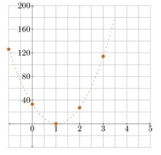
Figure 13: Loss curve
The y-axis represents the loss and the x-axis represents \(\theta_0\), which is also referred to as weight. So for any possible value of the weight, this graph shows the corresponding value of the loss as an orange dot.
To draw this graph five weights (i.e. five different values for \(\theta_0\)) were chosen, -1.0, 0.0, 1.0, 2.0, and 3.0.
For each weight, we determine its corresponding loss while keeping \(\theta_1\) (i.e. the bias) at 0.0, using the following dataset:
[2.0 1.0 4.0 3.0]
for the \(x\) values (line-xs), and
[1.8 1.2 4.2 3.3]
for the \(y\) values (line-ys).
Subsequently, this objective functions (obj) is used:
((l2-loss line) line-xs line-ys)
by providing it with a \(\theta\) which is constructed out of each of those five weights for \(\theta_0\), and 0.0 for \(\theta_1\) (the bias). In other words, the obj expression takes parameters as its arguments and returns a scalar which represents the loss.
Those are the corresponding losses for each weight:
(obj (list -1.0 0.0)) => 126.21
(obj (list 0.0 0.0)) => 33.21
(obj (list 1.0 0.0)) => 0.21
(obj (list 2.0 0.0)) => 27.21
(obj (list 3.0 0.0)) => 114.21
This type of graph is used to show quantities that are not part of the dataset. In this context, quantities are values or metrics that are derived from the model and its training process (i.e. the relationship between the loss and \(\theta\)) rather than being directly observed data points (i.e. these are not part of the raw input data).
In other words, the graph illustrates internal aspects of the model (like the parameter values and loss) rather than showing the raw input data directly. This distinction is important because it shifts the focus from the data itself to the model's behavior and performance during training.
We can see on the graph that an estimate weight value of 0.0 for \(\theta_0\) (whilst keeping \(\theta_1\) at 0.0) corresponds to a loss of 33.21. The point (0.0, 33.21) is circled in this graph:
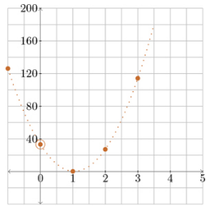
Figure 14: Loss curve
One can also observe that the loss is lowest at the bottom of the curve. Because of this, what we need to do is to roll down the curve to get to its bottom. The idea is to roll down as fast as possible without overshooting, we use the rate of change for this.
Here's how the rate of change is represented on the loss curve:
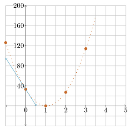
Figure 15: Loss curve with tangent
The turquoise line is known as a tangent and touches the curve at exactly one point, which in this case is (0.0 33.21). The rate of change determined is the slope of the tangent, it is called the gradient.
Now if we were to revise our \(\theta_0\) by, say 0.6623, this is how the loss curve would look like:
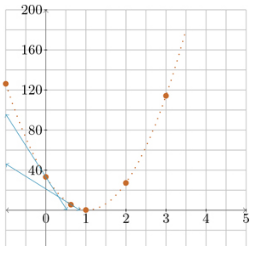
Figure 16: Loss curve with tangents
What's interesting about this graph is that the second (revised) tangent is less steep compared to the tangent for the initial \(\theta_0\) estimate (of 0.0). Therefore, the gradient of the second is lower than the first.
In order to find the gradient we need to use the function ∇.
Optimizers
Stochastic gradient descent
The dataset which we looked at previously contains very few points. Real datasets by comparison can have as much as billion of points. Our loss function uses the entire dataset when it is invoked, that's because it is finding the difference between the \(ys\) in the dataset and the corresponding predicted \(ys\).
There is a better way which does not require traversing the entire dataset thousands of time, by means of sampling.
Using a small random sample of a few points from a large dataset will produce a good enough approximation of loss, which can be used to revise θ. This sample is referred to as a batch, and at each revision (i.e. epoch), only small fraction of the dataset is examined. This is repeated over many revisions, with new samples for each revision, to get as close to the ideal loss as possible.
This kind of gradient descent where the objective functions uses sampling is known as stochastic gradient descent. Stochastic is another way of saying that random numbers are used to determine the results. Using samples as part of the objective function is what makes it stochastic.
Momentum gradient descent
Momentum gradient descent is a method which reaches a well-fitted \(\theta\) with fewer revisions.
Going back to this loss graph
Figure 17: Loss curve with tangents
we know that each tangent gets less and less steep as it approaches the bottom of the curve. In other words the slope of tangent (i.e. the gradient), gets smaller. In fact, as the bottom of the curve is approached, the gradient gets closer and closer to 0.0. Furthermore, at the very bottom of the curve, the gradient is exactly 0.0.
What happens when a very small gradient is multiplied by a very small learning rate, as in update functions, is that we get something even smaller. So at each revision closer to the bottom, the amount of change to each parameter gets smaller and smaller.
Now, the change made to a given parameter at each revision is known as the velocity of descent. Therefore we can say that the velocity of descent slows down as it approaches the bottom of the curve, but, it can be sped up.
Here is an example function which updates \(\theta\):
(define naked-u (lambda (P g) (− P (* alpha g))))
in this expression since we subtract (* alpha g), the change to \(P\), (i.e., the velocity) is:
(− (* alpha g))
The problem of the velocity of descent slowing down can be remedied by boosting our velocity. This is achieved by adding some fraction \(\mu\) of the velocity \(v\), of the previous revision, to the change we expect to make in the current revision.
Therefore our velocity which was:
(− (* alpha g))
becomes:
(+ (* mu v) (- (* alpha g)))
which is better written as:
(- (* mu v) (* alpha g))
where \(\mu\) is a hyperparameter between 0.0 and 1.0 (usually 0.9) which represents the decimal fraction of the previous velocity we want to retain for the next velocity. \(v\) represents the velocity of the most recent revision and it is an accompaniment of its corresponding parameter, which should have the same shape as its parameter.
Here's the inflate function for the velocity algorithm:
(define velocity-i (lambda (p) (list p (zeroes p))))
it adds an initial accompaniment to the parameter \(p\).
The function zeroes produces a tensor with the same shape as its argument, made up entirely of 0.0s. Here's a chart for it:
(zeroes (tensor (tensor 2.1 9.3 1.5) (tensor 7.2 3.3 6.6))) => (tensor (tensor 0.0 0.0 0.0) (tensor 0.0 0.0 0.0))
The reason for initially setting the velocity to be a zeroed tensor is because at the first revision, there hasn't been any change to any of the parameters.
Here's the corresponding deflate function:
(define velocity-d (lambda (P) (ref P 0)))
which results in the parameter that is indexed at 0 in the inflated representation. And finally, this is the update function:
(define velocity-u (lambda (P g) (let ((v (- (* mu (ref P 1)) (* alpha g)))) (list (+ (ref P 0) v) v))))
which expects an accompanied parameter \(P\) where the parameter \(P_0\) is accompanied by its velocity \(P_1\) from the last revision. The gradient gradient \(g\) is its second argument.
RMSProp
The momentum gradient descent algorithm improves the velocity of a revision by borrowing some velocity from the preceding revision.
There are other ways to improve the velocity of a revision. RMSProp is an algorithms that works by modifying the fraction of the gradient used at each revision.
We know that the gradient approaches 0.0 as we roll down to the bottom of the incline. Similarly to our problem of velocity of descent, where the amount of change to each parameter gets smaller and smaller, we observe the same behavior with the velocity of the gradient. In momentum gradient descent, \(\alpha\) (the learning rate) is a constant, which causes the velocity of the gradient descent to slow down in a similar way.
Since \(\alpha\) represents the fraction of the gradient used as the velocity, another approach to addressing this problem is to make this fraction adaptive. Adaptive means that the fraction is decided based on the gradient and its historical values. To do that \(\alpha\) is multiplied with a factor \(D\) that reacts to the current gradient and it's historical values.
The fraction of the gradient used as the velocity at every revision should reduce more slowly than the rate at which the gradient reduces, so the way in which \(D\) behaves means that it must get larger as the gradient gets smaller since \(\alpha\) itself is a constant.
We say that \(D\) varies inversely as the gradient. A simple way to make something vary inversely is to divide 1.0 by it. So \(D\) looks something like \[\frac{1}{G}\] Here \(G\) is referred to as a modifier.
Now the task is to find \(G\), which must depend on the gradient and its history. Another thing to remember is that when multiplying \(\alpha\) by \(D\), we're doing \[\alpha * D = \alpha * \frac{1}{G} = \frac{\alpha}{G}\] So \(\alpha\) has to be divided by the modifier to change the fraction of the gradient we must use. This can be achieved by using something which takes the history of the gradient into account but is not susceptible to all the variations in it, so that its effect is not nullified.
The solution is to use smoothing to historically accumulate a modifier which is based on the gradient.
We need a representation with an accompaniment based on our smoothed gradients. Here's the definition of the rms-u function:
(define rms-u (lambda (P g) (let ((r (smooth beta (ref P 1) (sqr g)))) (let ((alpha-hat (/ alpha (+ (sqrt r) epsilon)))) (list (- (ref P 0) (* alpha-hat g)) r)))))
Like other update functions, rms-u takes an accompanied parameter and a gradient and revises the accompanied parameter. Here's a breakdown of the function:
- The accompaniment \(P_1\) is the smoothed value derived from the gradient \(g\).
- \(r\) is the value we determine as the new accompaniment. It is part of the returned accompanied parameter.
- \(\beta\) is a hyperparameter for the decay rate.
The gradient \(g\) in the function call
(smooth beta (ref P 1) (sqr g))
has to be squared because \(g\) can be negative, and if we get too many consecutive negative gradients, then our historical averages can themselves become negative. This is a problem because r gets used by the modifier" G i.e.
(+ (sqrt r) epsilon)
and its being negative can make \(\hat{\alpha}\) (i.e. the learning rate) negative. When that happens, we end up ascending the gradient instead of descending it. This means that we would move our θ in a direction that increases the loss instead of a direction that decreases the loss.
In this expression:
((r (smooth beta (ref P 1) (sqr g))))
the problem with squares is that they grow much faster than the scalar that is being squared. Since \(r\) gets used inside
((alpha-hat (/ alpha (+ (sqrt r) epsilon))))
as the modifier, the modified learning rate would increase at a faster than the rate at which the gradient reduce. This could cause the descent to overshoot the lowest point in the loss curve. Therefore the idea of taking the square root with sqrt, is to modify \(r\) so that it tracks the gradient more closely instead of tracking the square of the gradient.
However we need to account for the possibility that \(r\) could be 0.0, which would cause the division of α to be undefined. This is easily solved, by adding a tiny constant ε known as the stabilizer, to (sqrt \(r\))
Finally, those are the definitions for inflate and deflate functions:
(define rms-i (lambda (p) (list p (zeroes p))))
for inflate, where we accompany \(p\) with \(r\). \(r\) is a zeroed tensor.
And
(define rms-d (lambda (P) (ref P 0)))
for deflate, where we extract the parameter \(p\) from the accompanied parameter.
This version of gradient descent is called RMSProp. The term RMS stands for root mean square, which reflects the fact that we use the mean (i.e. the smoothed historical average) of the squares and then take its square root. The suffix Prop is a contraction of the term back propagation.
Rate of change
Rate of change short definition
The rate of change of a function (of the objective function in most cases), such as:
((l2-loss line) line-xs line-ys)
determines how its result changes when its argument (i.e. θ) is revised.
The rate of change is also known as the derivative.
A more concrete example of this would be to invoke an objective function as such:
(((l2-loss line) line-xs line-ys) (list 0.0 0.0))
which would achieve the objective of finding a well-fitted θ by returning the loss for this particular θ.
If the returned loss was, for instance, 33.21, we would test the behaviour of θ0 to see how we should revise it. We then change θ0 by increasing it a small amount for testing purposes, so that our new θ0 is 0.0099. If the loss goes down, for instance, to 32.59, we are slightly closer to our ideal loss. In other words we changed the loss by:
(32.59 - 33.21) = -0.62
Now that increasing our θ0 by 0.0099 has changed our loss by -0.62 we would say that our rate of change is:
-0.62 / 0.0099 = -62.63
Rate of change calculation
The rate of change is determined by subtracting the old (which so far has been greater) loss from the new (which so far has been smaller) loss, and in our examples so far this has resulted in negative values.
Using the rate of change
Increasing θ from 0.0 by a small value can result in a rate of change which has a large absolute value, meaning that a small increase in θ causes a relatively large decrease in its loss.
This idea can be used to determine how much further to revise θ so as to achieve a bigger loss. However we should be wary that the revision of θ moves us closer but does not overshoot the ideal loss.
This problem can be resolved by taking a small scalar (like 0.01), and multiply the rate of change by it and revise our θ by that amount.
This small scalar is known as the learning rate.
θ revision after finding the rate of change
The rate of change is multiplied by α (the learning rate) and the returned (negative) value used to update/revise θ by subtracting from θ this negative value (which has resulted in a positive revision of θ so far).
The rate of change cannot be reused as it depends on the current θ.
Smoothing
To smooth a data set is to create an approximating function that attempts to capture important patterns in the data, while leaving out noise or other fine-scale structures/rapid phenomena. In smoothing, the data points of a signal are modified so individual points higher than the adjacent points (presumably because of noise) are reduced, and points that are lower than the adjacent points are increased leading to a smoother signal. (source: wikipedia)
Here's a smoothing function:
(define smooth (lambda (decay-rate average g) (+ (* decay-rate average) (* (- 1.0 decay-rate) g))))
where decay-rate must always be a scalar between 0.0 and 1.0, average is a historically-accumulated average (or historical average), and \(g\) is a gradient. Both average and \(g\) must be tensors of the same shape. The function blends two tensors using decay-rate and
(- 1.0 decay-rate)
as weights.
Here's an example of how it is used using these seven scalars
50.3 22.7 4.3 2.7 1.8 2.2 0.6
and finding (smooth 0.9 0.0 50.3)
(smooth 0.9 0.0 50.3) (+ (* 0.9 0.0) (* 0.1 50.3)) (+ 0.0 5.03) => 5.03
Next, finding (smooth 0.9 5.03 22.7)
(smooth 0.9 5.03 22.7) (+ (* 0.9 5.03) (* 0.1 22.7)) (+ 4.53 2.27) => 6.8
Once again, finding (smooth 0.9 6.8 4.3)
(smooth 0.9 6.8 4.3) (+ (* 0.9 6.8) (* 0.1 4.3)) (+ 6.12 0.43) => 6.55
Here are the original scalars
50.3 22.7 4.3 2.7 1.8 2.2 0.6
and those are the historical averages after they've been smoothed
5.03 6.8 6.55 6.16 6.07 5.64 5.14
Comparing the smoothed scalars to the original ones, one can tell that the smoothed ones don't vary as much and that the variations between them are much gentler.
Repeatedly invoking smooth over these scalars averages out variations by blending historical scalars with newer ones. The importance of 0.9 that is passed as the decay-rate means that in order to find the new historical average, only 90% of the prior historical average is used, and every new scalar encountered is diminished to 10% of its value. Therefore, new scalars that vary wildly from the historical average contribute only to a small fraction to the new historical average.
Let's consider the first scalar 50.3. The first time smooth is invoked, it is multiplied by 0.1 and results in 5.03. The next time smooth is invoked, 5.03 is multiplied by 0.9. This means that the contribution of the first scalar to the next smoothed result is \[0.9*0.1*50.3=4.53\] meaning that it contributes less and less to the historical average as newer data is encountered.
The decay-rate is referred to as the rate-of-contribution because the contribution of earlier items decays as more items are incorporated. The formula for the contribution of the scalar 50.3 after \(n\) invocations of smooth is \[0.9^{n-1}*0.1*50.3\]
Breaking down the formula:
- \(0.9^{n-1}\): is the exponential decay factor where \(n\) is the time step. The base, 0.9, is the value decreases by 10% for each successive step. The exponent \(n-1\) is the factor which changes with each step of \(n\). The \(-1\) in this expression arises from how indices are handled in time series or iterative processes, where when \(n=1\) is treated specially. By using \(n-1\), the initial term (i.e. when \(n=1\)) which is \(0.9^0\), equals 1. This means that the influence of the initial value is fully retained at the start. This is particularly important in smoothing applications where the first value has to maintain its full weight before starting the decay process.
\(0.1\): is the weighting factor, coming from
(- 1.0 decay-rate)
- 50.3: is the initial value.
In practical terms, it looks like this in the time series smoothing context:
- At \(n=1\): \(0.9^{1-1}*0.1*50.3=1*0.1*50.3=5.03\)
- At \(n=2\): \(0.9^{2-1}*0.1*50.3=0.9*0.1*50.3=4.527\)
- At \(n=3\): \(0.9^{3-1}*0.1*50.3=0.81*0.1*50.3=4.0743\)
In general this formula is true for any scalar encountered. The contribution of that scalar decays over time. Smoothing is a method of incorporating historical information which is less relevant as we move forward, and it is true for tensors of any ranks.
Tensors
Here is a tensor1. A tensor1 has only scalars and groups scalars together:
[5.0 7.18 3.1416]
A tensor2 can be thought of as a matrix or a two-dimensional array. The elements of a tensor2 are tensors1, for example:
[[7 6 2 5] [3 8 6 9] [9 4 6 5]]
has 3 elements:
[7 6 2 5] [3 8 6 9]
and:
[9 4 6 5]
Therefore if we have a tensor whose elements are tensorsm, that makes it a tensorm+1. One condition however is that all the tensorsm must have the same numbers of elements.
A scalar such as:
9is also a tensor. It is a tensor0, but zero-dimensional arrays are rarely mentioned.
Tensor rank
The above superscripts have a name, they are known as the rank of the tensor. The rank of a tensor tells us how deeply nested its elements are. For instance, here is a tensor3:
[[[8 9] [4 7]]]
this is because it has 1 tensor2 element that has 2 tensor1 elements of 2 scalars each.
In any given tensor, the nested tensors have the same number of elements. For example, the nested tensors of tensors2 are all tensors1, and each of those tensors1 has the same number of tensors0.
This means that the tensorsm that are elements of a tensorm+1 have the same shape.
Tensor shape
The shape of:
[[5.2 6.3 8.0] [6.9 7.1 0.5]]
is this list of positive natural numbers:
(list 2 3)
because it is a tensor2 of 2 tensors1, each of which has 3 tensors0 elements.
The shape of:
[[[5] [6] [8]] [[7] [9] [5]]]
is:
(list 2 3 1)
It is:
- a tensor3 of 2 tensor2 elements.
- Each of those tensor2 has 3 tensor1 elements.
- Each of those tensor1 has 1 tensor0 element, which is a scalar.
- Another useful thing to note is that the rank of a tensor is equal to the length of its shape.
Update of parameters
The following function:
(define naked-u (lambda (P g) (− P (* alpha g))))
updates the parameters by multiplying the gradient g by the learning rate alpha, and subtracts the result from the parameter P to yield the next P, so that ultimately we get closer to a well-fitted θ.